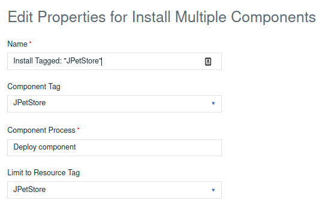
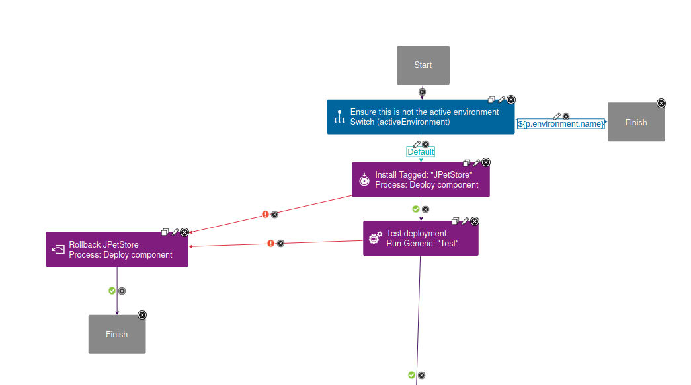
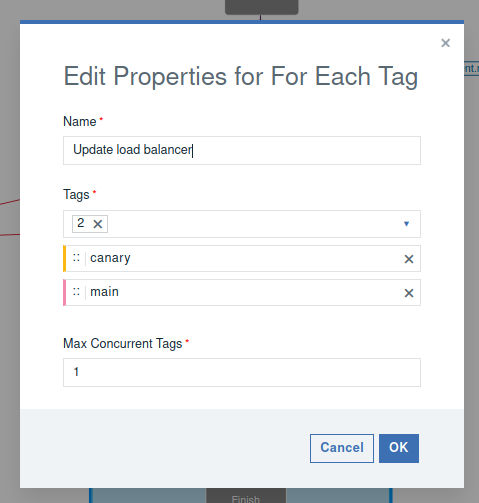
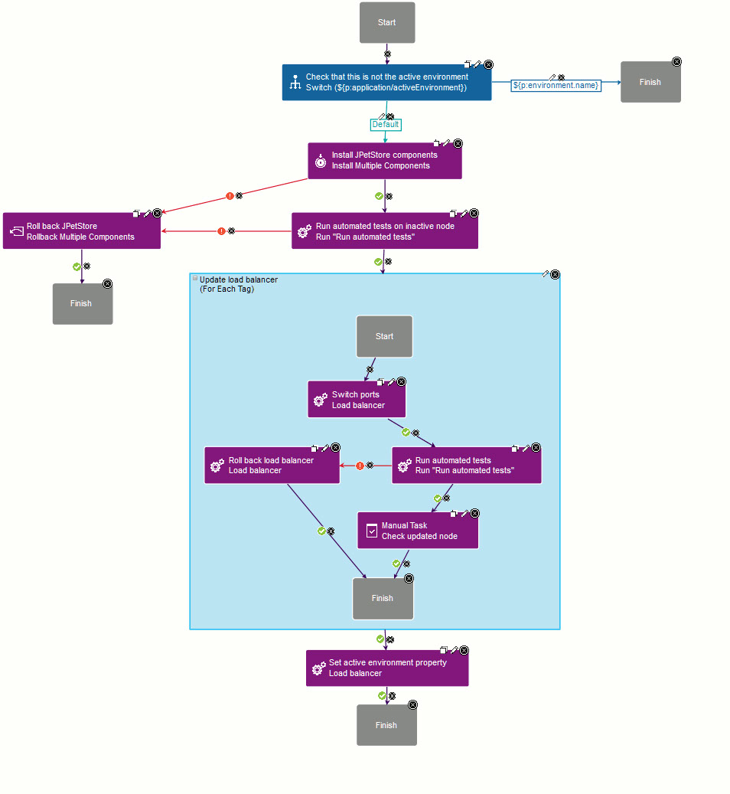

Lesson 3: Create the application process
Create the application process used by the blue-green deployment.
Before you begin
About this task
Procedure
- Create a process for the JPetStore application, and name it Blue-green, or something similar.
-
On the process designer, add a Switch step that tests the
activeEnvironmentproperty.There are several ways to ensure that the process is running on the correct environment, but this method easy to implement. The Switch step compares theactiveEnvironmentproperty to the name of the environment on which the process is running. If those names match, that means the process is running on the active environment, which is not what you want and the process ends.Note: If theactiveEnvironmentproperty is not on the Property Name list, review the previous lesson in Creating the environments. -
Add an Install Multiple Components step.
This step uses the
JPetStoretag to deploy the JPetStore components. This step iterates over each component with the specified tag. If you use your own application, ensure that the component processes all have the same name. The components are deployed to thegreen-aandgreen-bresources in the currently inactive Green system.
- Optional:
Add the optional automated testing step.
If you typically run tests on your deployments, this is a good place to add them. For simplicity, you might use a Shell step or a generic process to as a placeholder for processing flow.
-
Add a Rollback Multiple Components step.
If either the deployment step or the automated test fails, the process rolls back the newly deployed components to the version that was deployed at the beginning of this application process. As with the previous step, you might use a manual step or run a generic process step to represent the rollback feature.
So far, the deployment is a typical multi-component deployment, and customers are unaware that an upgrade is in progress in the inactive system. In the next step, you define the For Each Tag loop that contains the primary blue-green processing.

-
Add a For Each Tag utility step to the For Each Tag loop.
By the time processing gets to this loop, the new version of the application is already deployed to the inactive environment. The purpose of this loop is to update the load balancer in stages. In the loop, the Canary tag runs first, followed by the Main tag. This works because the For Each Tag step lets you restrict processing to specific tags and control the order in which they are processed. When the
Max Concurrent Tagsproperty is set to 1, only one node is processed at a time. In this case, the Canary-tagged node is processed before the other nodes.
-
Within the loop, add the Load balancer component step.
This step changes a property on the load balancer component that represents the active port. The component process can access the properties it needs directly, without accepting any passed values.
Now customers are using the new version of the software for the first time on the canary node. However, on the first time through the loop, the process updates the port for only the canary node.
-
In the loop, add a test step.
The process runs automated tests on the node that is affected by the tag. If those tests fail, another step reverts the load balancer.
-
In the loop, add a rollback step.
If the tests fail, this step reverts the load balancer to the last version.
-
Add a manual task step that you can use to verify the updated.
The manual approval lets you verify that the canary node is working properly before the loop runs again and updates the other nodes. Your approval process is probably different, but the manual approval lets you verify that the deployment is running the way you expect for this example tutorial.
-
Click the new process to open it in the process editor.
At the end of the process, the process updates the active environment property with the name of the newly active environment. I'm using a component process on the load balancer component for this, but there are other ways to change the application property.
